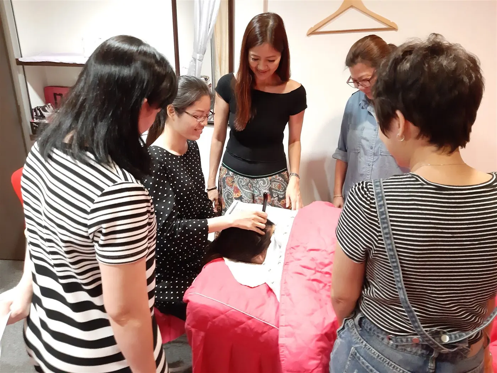
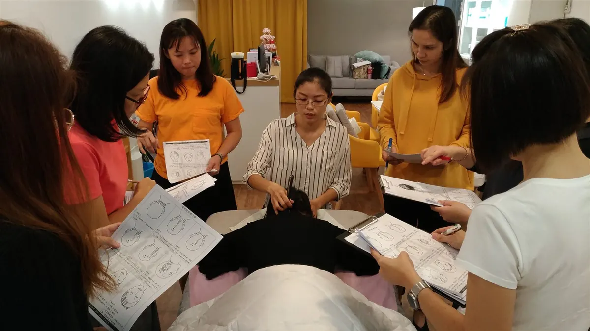

A private invitation · Founding Students
Learn the Bojin eye routine with me, before anyone else.
I'm teaching my full eye-area course to a small first group: 20 women in the US, 40 and over. You get the whole course and a personal review of your practice. I get to learn from you.
- $39 founding price · a $108 value
- Personal Video Review included
- 14-day money-back guarantee
- Lifetime access
Your teacher
Hi, I'm Yu-Ting.
I'm a certified Bojin instructor with three professional associations in Taiwan. In 2020 my studio was featured in Taiwan's Top 100 Brand Stories.
Bojin is a gentle tool tradition from Taiwan. It follows the bone structure around the eyes in a set route and a set order. In this course I teach in Mandarin, my first language, with English subtitles on every lesson. You'll get the same lessons my students in Taiwan get.
Read my story →

Credentials
The certificates are in Chinese. Tap any one to see it full size. Personal details have been covered.
Inside the lessons
Close-ups, clear cues,
and room to follow along.
Every step has an on-screen card that names the step and counts the passes, so you always know where you are.
What's inside
One connected learning path.
- 12 video lessons
- About 35 minutes
- Bonus Complete Eye Ritual
- 5 printable guides
- Phone, tablet or computer
Every lesson opens on the day you join. Open each stage to see how the lessons build on one another.
01 · Get ready: Modules 1 & 2
Start Here and Tool Calibration. Who Bojin is for, what to prepare, and how to set the angle and pressure before you go near the eye.
02 · Learn both sides: Modules 3 & 4
The five steps, taught in detail on your left eye across two lessons, then followed along on your right eye.
03 · Give your guiding hand a role: Module 5
Three lessons on The Guiding Hand, including a full demonstration of both eyes you can follow at a calm pace.
04 · Finish and refine: Modules 6, 7 & 8
Soothing Eye Massage, Common Mistakes, and Practice & Progress Guide. The hands-only finish, how to check your own practice, and how to keep going after the course.
05 · Bring it together: Bonus Complete Eye Ritual
What comes before and after the core routine: light eye-area movements, a hands-only finish, and how the parts connect. Included in the course.
The printable guides: Quick Route Map, One-Side Comparison Worksheet, Photo Consistency Kit, Safety Checklist and Tool Buying Guide.
Included for Founding Students
Your Personal Video Review.
This is the part I care about most. I want to see how you practice and help you get it right.
- Practice and film. Record about two minutes of the part you feel least sure about. Good light, your face, the tool and both hands in the frame. No makeup or editing needed.
- Send me a link. Share it from iCloud, Google Photos, Google Drive or WeTransfer, and reply to my welcome email by day 14.
- Get my notes. I watch it myself and send you notes on your tool angle, pressure, direction and order.
Only my small team and I will see your video. We never post it, and we delete it 90 days after the program ends.
The exchange
A small group, and a fair trade.
What you get
- The full course: 12 video lessons, the bonus Complete Eye Ritual and five printable guides
- Lifetime access on your phone, tablet or computer
- One Personal Video Review from me
- The founding price of $39: the full course ($79) plus a Personal Video Review ($29), a $108 value
- The same 14-day money-back guarantee everyone gets
What I ask in return
All within your first 14 days:
- Watch Modules 1 to 8 within 14 days.
- Practice at least five times. The worksheet helps you keep track.
- Send me one two-minute practice video by day 14.
- Answer a five-question survey by day 14.
You can also write a few lines about your experience. That part is up to you. If you share it, I'll note that you joined at a founding price.
Before you apply
Three things to know.
Taught in Mandarin
Every lesson has English subtitles on screen. Most of the course is me showing the movements, so you can follow along by watching.
You'll need a tool
A stainless steel Bojin stick, not included. Here is one example on Amazon. Any stainless steel stick with the same shape (a broad edge on one end, a rounded tip on the other) and a smooth edge will work. A smooth-edged gua sha stone works to start, too.
It isn't for everyone
Please don't use this method if you have glaucoma, a retinal condition or severe myopia, or if you've recently had eye surgery, or fillers or Botox around the eyes.
20 spots · Applications close Wednesday, October 14
How to apply
Reply to the email I sent you, or write to me at hello@bojinfacetension.com, and answer three short questions.
- Which part of the free video made you think "I want the full course"? Pick one: (a) seeing the route follow the bone around the eye, (b) how gentle and calm it looked, (c) Yu-Ting's way of teaching, (d) that it's a tradition from Taiwan, or (e) something else.
- What do you want most from this course? Pick one: (a) eyes that look less tired after screens, (b) eyes that look less puffy in the morning, (c) a calm self-care routine just for me, (d) learning a real technique the right way, or (e) something else.
- Before you'd pay $39, what would you still need to know or see? One sentence is plenty.
Also tell me your age range and state, and reply "yes" if you can practice five times in 14 days and none of the safety notes above apply to you.
After October 14, I'll choose 20 women and write to each of you. If I choose you, you'll get a PayPal invoice. PayPal will show 鑫彥瑜珈館, the registered name of my company in Taiwan. Héhé Studio, where I teach Bojin, is part of it. After you pay, you'll get your login within 24 hours.
US$39
The full course ($79) plus a Personal Video Review ($29), a $108 value
Email Yu-Ting to apply →Apply by Wednesday, October 14
No payment on this page. You pay only if I choose you, by PayPal invoice, with a 14-day money-back guarantee. PayPal handles the payment, so I never see your card details.
Questions
You might be wondering.
Do I need to understand Chinese?
No. Every lesson has English subtitles, and most of the course is demonstration you can follow by watching.
How much time does it take?
The lessons add up to about 35 minutes. Watch them on any days you like within the first 14 days. After that, I suggest using the tool about twice a week. You never need to do it every day.
What if it isn't right for me?
Email me within 14 days of paying and I'll refund the full $39 through PayPal. No questions asked.
What happens after I apply?
I read every reply myself. After October 14 I'll choose 20 women and write to each of you. If you aren't in this first group, you'll be the first to hear when the course opens to everyone.
I still have a question.
Write to me at hello@bojinfacetension.com. I read every email.